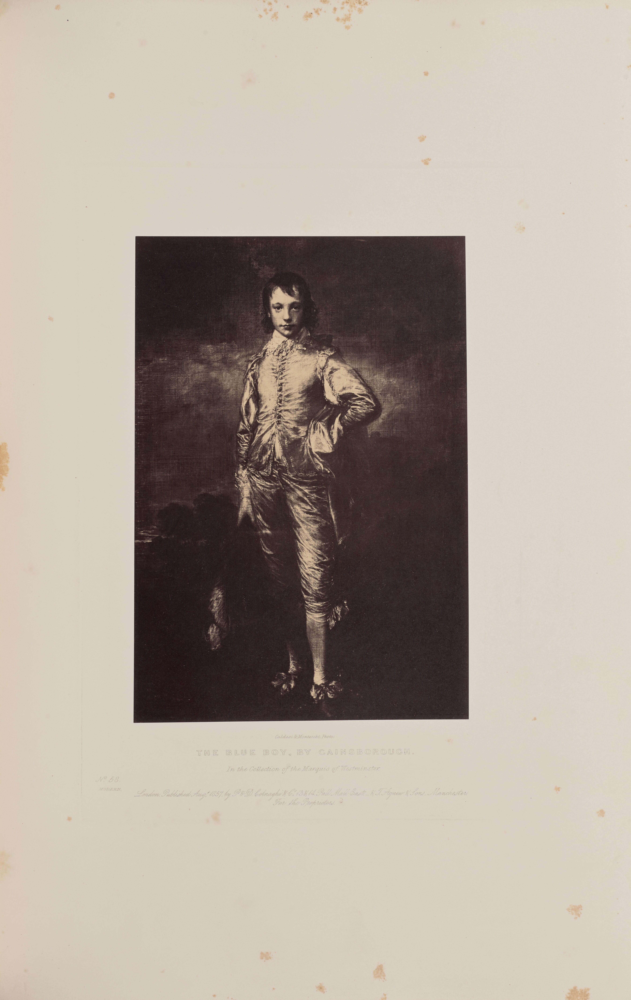

The Blue Boy, by Gainsborough
Artist: Caldesi & Montecchi
Year: 1858
Featured in Cinema
Film(s): Django Unchained(2012)
The Connection
The Blue Boy, by Gainsborough (1858) is visually referenced in Django Unchained (2012) through the character Django, who wears a similar blue outfit. The reference uses the painting's recognizable clothing and aristocratic style to connect the character to the wealthy Southern plantation world depicted in the film.
← Back to Exhibition